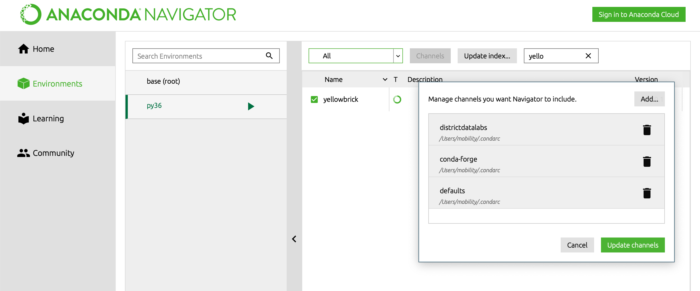
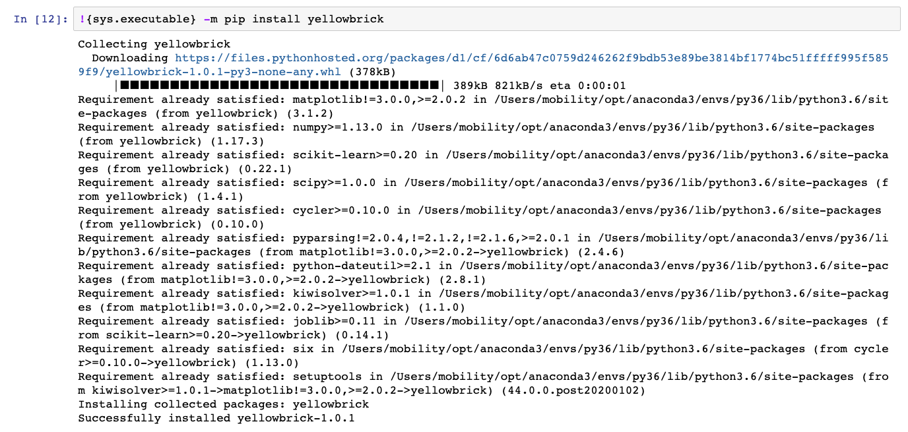

아나콘다 환경에서 패키지를 설치하기 위해서는 아나콘다 내비게이터의 Environments에서 설치하는 경우가 많다.
pip install 또는 conda install 명령어를 이용하여 터미널에서 설치하기도 하지만, 아나콘다로 가상환경이 구축되어 있는 상황에서는 아나콘다 내비게이터를 이용하는 것이 마음이 편하다. (구글링을 해보면 가상환경별로 패키지를 설치하는 방법을 찾을 수 있다.)
문제
아나콘다 내비게이터의 Environments에 가면 패키지 리스트를 보유하고 있는 채널을 등록해야 한다. 기본적으로 conda-forge를 등록하는 경우가 많다. 왠만한 패키지는 콘다 포지를 통해서 설치할 수가 있는데, 간혹 콘다 포지에 없는 경우가 있다.
<참고>
이곳을 방문하면 콘다 포지 채널에서 설치할 수 있는 패키지 리스트를 검색해 볼 수 있다.
k-means clustring을 해보기 위해서 머신러닝 시각화 도구로 사용하는 Yellowbrick을 설치하려다 보니 딱 위 문제에 직면했다. 옐로우브릭은 머신러닝 패키지로 유명한 scikit learn처럼 유명한 것으로 보이는데, 설치가 쉽지 않으니 문제가 된다. 처음부터 설치가 어려워 보이면 오히려 문제 해결은 더 쉬울 수도 있다. 구글링의 늪에 빠지기 전에 바로 알만한 사람에 도움을 청해볼 수도 있기 때문이다. 무한 loop 탈출
구글링 시도
언제나 그렇듯 문제해결의 시작은 구글링이다.
첫 검색어가 anaconda channel list였다. Yellowbrick 패키지를 보유하고 있는 채널명이 무엇인지 몰랐기 때문이다.
가장 먼저 나온 검색결과 사이트에 들어가 봤더니, conda-forge 링크 정도만 유의미해 보인다. 거기로 갔더니 콘다 포지 채널의 패키지 리스트를 보는 사이트를 방문해서 리스트를 웹으로 검색하는 정도만 습득하고 끝.
두번째 검색어가 anaconda channel for yellowbrick이다. 아나콘다 채널에 대해서 대충 감을 잡은 상황에서 이제 바로 옐로우브릭을 담고 있는 채널을 찾아보기로 한 것이다. 그랬더니 옐로우브릭에 대한 소개 페이지가 검색결과 가장 상단에 떴다. 그래서 방문하게된 아나콘다의 패키지 소개 페이지.
해결책 확인
그곳에서 채널에 대한 핵심 단서인 설치 명령어를 마주하게 되었다.
conda install -c districtdatalabs yellowbrick
위 명령어를 풀이해 보면, “-c districtdatalabs는 디스트릭트데이터랩스라는 채널에서라는 의미이고, 그 채널에서 yellowbrick이라는 패키지를 설치하라"이다. 결국, 찾고자 했던 채널명은 districtdatalabs!
이렇게 찾은 채널명을 아래 방법으로 입력하면 옐로우브릭 패키지 검색이 가능하다.
“아니콘다 내비게이터>Environments>Channels>add>
districtdatalabs”

해보고 나니 I
애초에 구글링 시작부터 yellowbrick으로 시작했으면, 바로 옐로우브릭 웹사이트에 접속할 수 있었다. 그리고 거기서 Quick Start에 가면, 원했던 명령어를 검색할 수 있었던 것으로 나온다. 구글링도 실력이다
해보고 나니 II
가장 쉬운 방법을 찾았다.(참고링크) 주피터 노트북에서 패키지를 설치하면 모든 것이 해결된다. 애초에 직면했던 문제점이 어떤 가상환경에 패키지를 설치하는 것인가였다. 주피터 노트북이 실행되는 상황이면, 이미 특정 가상환경에서 작동하는 것이다. 돌리려는 코드에 맞는 가상환경인지 확인하고, 패키지를 현재 주피터 노트북이 작동 중인 가상환경에 설치하면 상황이 종료된다. 명령어는 아래와 같다.
import sys
!conda install pip # pip 미설치일 경우
!{sys.executable} -m pip install yellowbrick # 채널 입력이 필요없다(?)
아래는 주피터 노트북에서 패키지를 설치하는 화면
(yellowbrick패키지 예시)

더 자세한 설명이 필요하거나 더 좋은 방법이 있으면, 댓글로 알려주세요.
)